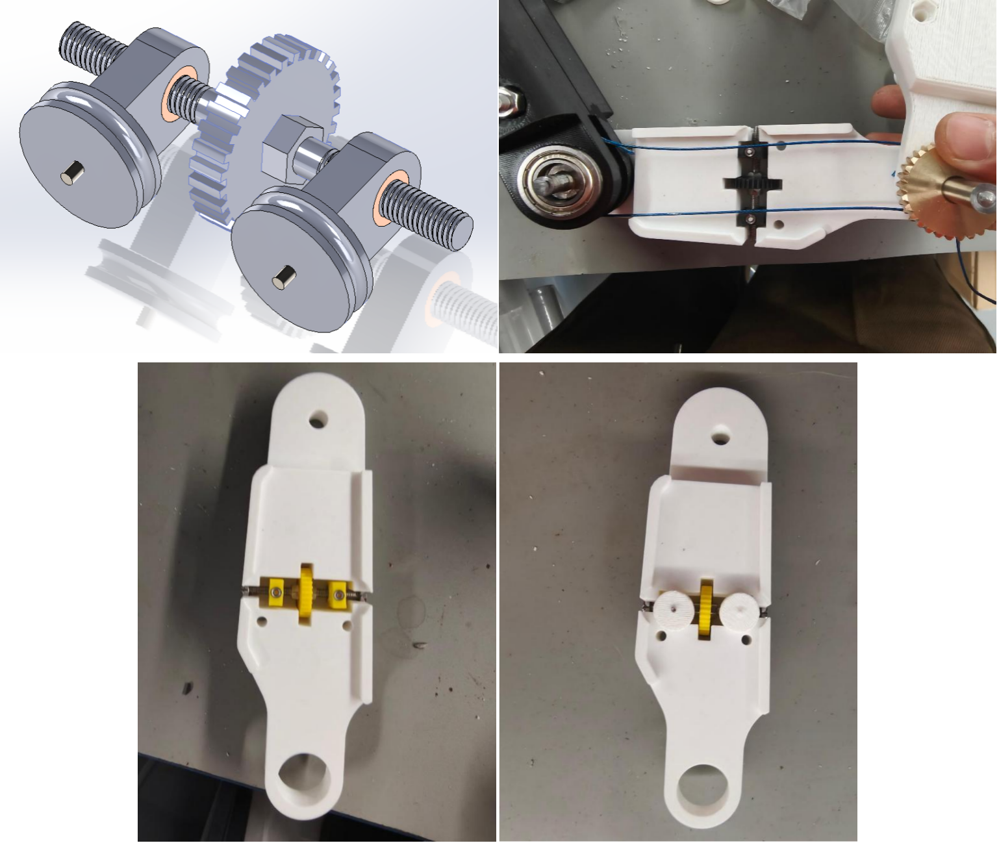

About
Yiwen Gao
Mechanical engineering graduate student at the University of Pennsylvania.
I’m pursuing an M.S.E. in Mechanical Engineering and Applied Mechanics at Penn. I’m interested in robotic manipulation, particularly how the design of a transmission, a finger, or a compliant mechanism changes what a robot can do in contact.
During a summer research internship in Stanford’s Salisbury Robotics Lab, I designed and tested a cable driven arm with adjustable stiffness. At Shanghai Jiao Tong University, I worked on an underactuated gripper, a mechanical swimmer for experiments in viscous fluids, and a measurement and control system for a bearing test rig. I also designed a head and neck assembly and developed gripper concepts as a structural engineering intern at the Chengdu Humanoid Robot Innovation Center.
